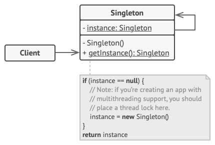
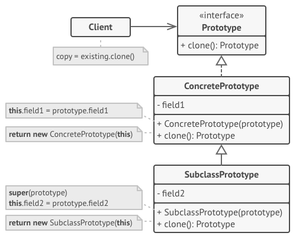
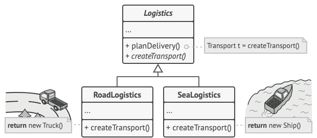
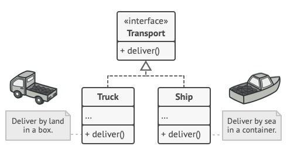
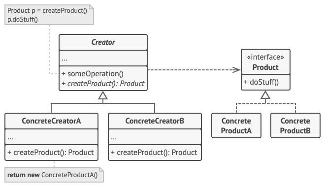

/
On this page
Creational patterns
Creational patterns provide flexibility in what gets created, who creates it, how it’s created, and when. They abstract the instantiation process, making systems independent of how objects are created, composed, and represented.
Singleton
Ensure a class has only one instance and provide a global point of access to it.
Problem
- Ensure that a class has just a single instance (common reason for this is to control access to some shared resource—for example, a logger, a database, a file, etc.)
- Provide a global access point to that instance. Global variables are very handy, but also very unsafe, since any code can potentially overwrite the contents of those variables and crash the app. This pattern lets you access some object from anywhere in the program. However, it also protects that instance from being overwritten by other code.
Solution
All implementations of the Singleton have these two steps in common:
- Make the default constructor private, to prevent other objects from using the
newoperator with the Singleton class. - Create a static creation method that acts as a constructor. Under the hood, this method calls the private constructor to create an object and saves it in a static field. All following calls to this method return the cached object.

Drawbacks
- Singleton is often considered an anti-pattern, because it creates a global state and hidden dependencies, making code harder to test (many test frameworks rely on inheritance when producing mock objects), to understand (because of hidden dependencies), to parallelize (because of shared state) and more coupled. Dependency injection is often a better alternative.
- It solves two problems at the time, violating the Single Responsibility Principle.
- It requires special treatment in a multithreaded environment so that multiple threads won’t create a singleton object several times
Prototype
Lets you copy existing objects without making your code dependent on their classes.
Problem
Copying an object by creating a new instance and manually copying its fields seems straightforward, but it has limitations. Private fields may not be accessible, making a full copy impossible from outside the object. In addition, this approach tightly couples the code to a concrete class, which is problematic when only an interface is known rather than the actual implementation.
Solution
The pattern delegates the cloning process to the actual objects that are being cloned, by declaring a common interface for objects that support cloning (usually such interface contains just a single clone method). This avoids coupling code to the class of that object, i.e. your code shouldn’t depend on the concrete classes of objects that you need to copy.
An object that supports cloning is called a prototype. Its clone method creates an object of the current class and carries over all of the field values of the old object into the new one.

When your objects have dozens of fields and hundreds of possible configurations, cloning them might serve as an alternative to subclassing: instead of having multiple dummy subclasses that match some configuration, the client can simply look for an appropriate prototype and clone it.
Also, prototyping can avoid creation of new objects, which sometimes can be expensive (complex initialization, database queries, network calls)
Drawbacks
- Cloning complex objects that have circular references might be very tricky
- Avoidable when object creation is cheap & simple or when objects contain unique resources
Factory Method
Provides an interface for creating objects in a superclass, but allows subclasses to alter the type of objects that will be created.
Problem
Imagine that you’re creating a logistics management app. You first only handle transportation by trucks, but after a while you need to incorporate sea logistics. Now most of your code is coupled to the Truck class. Adding Ships into the app would require making changes to the entire codebase (and the same happens for each new type of transportation).
Solution
The pattern suggests that you replace direct object construction calls (using the new operator) with calls to a special factory method. The objects are still created via the new operator, but it’s being called from within the factory method. Objects returned by a factory method are referred to as products.
Creator and product classes for this example:


The client doesn’t see a difference between the actual products returned by various subclasses; it treats all the products as abstract Transport. It knows they are supposed to have the deliver method, but exactly how it works isn’t important to the client.
It’s clear that this pattern is useful when you don’t know beforehand the exact types and dependencies of the objects your code should work with, and you want to provide users with a way to extend the app’s internal components. Also, it follows Open/Closed Principle and Single Responsibility principle.
Structure

The Creator class declares the factory method that returns new product objects. nNote that the factory method doesn’t have to create new instances all the time; it can also return existing objects from a cache, an object pool, or another source.
Drawbacks
- code may become more complicated because of many subclasses
- becomes an anti-pattern if you create factories for every class “just in case”. Only add factories when you have actual variation in object creation.
Builder
Lets you construct complex objects step by step. The pattern allows you to produce different types and representations of an object using the same construction code
Problem
aaa
Solution
aaa
Structure
aaa
Drawbacks
aaa
Abstract Factory
Lets you produce families of related objects without specifying their concrete classes
Problem
aaa
Solution
aaa
Structure
aaa
Drawbacks
aaa
Images sources: https://refactoring.guru/design-patterns/